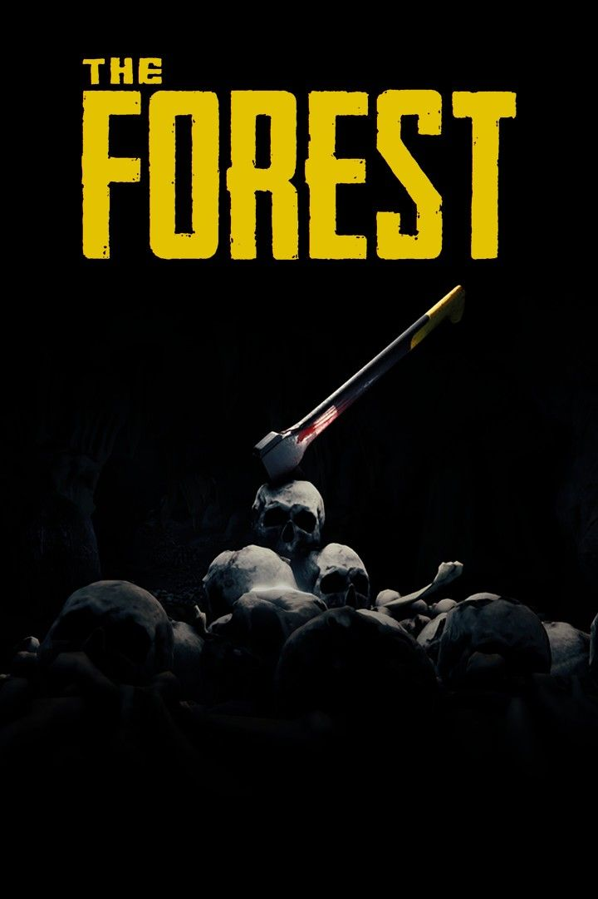
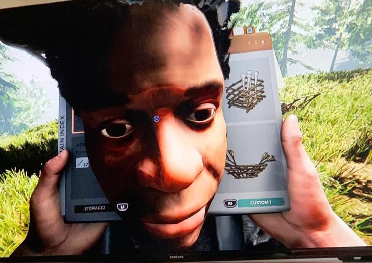
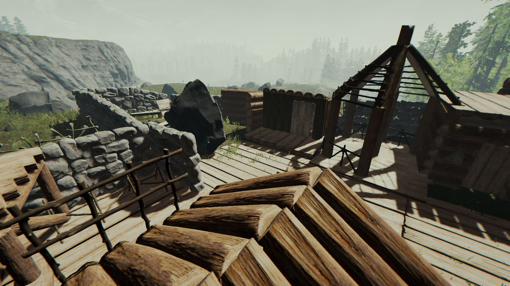
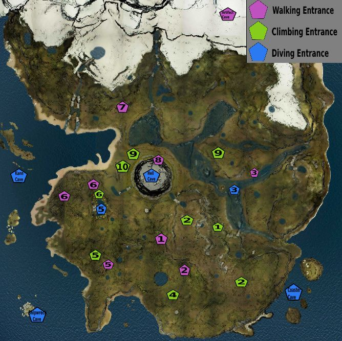
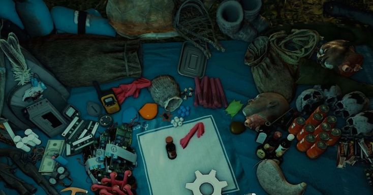
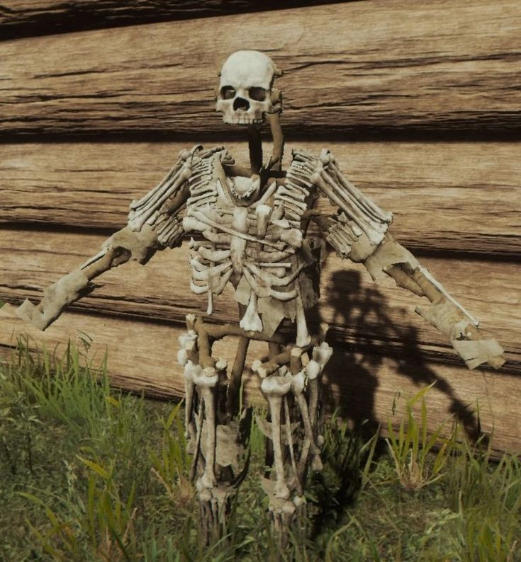
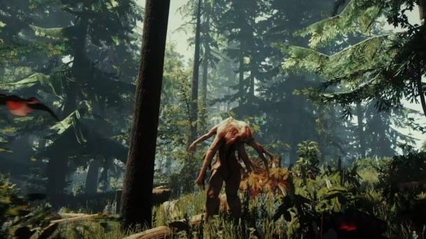

¿Qué es The Forest?

The Forest es un videojuego de supervivencia y horror desarrollado
por Endnight Games, lanzado en 2018 para PC y PS4. El jugador
encarna a Eric LeBlanc, un sobreviviente de un accidente aéreo que
debe sobrevivir en una isla misteriosa habitada por caníbales
mutantes, mientras busca a su hijo Timmy, quien fue secuestrado tras
el choque.
El juego combina mecánicas de supervivencia (hambre, sed, energía),
construcción de bases, exploración de cuevas y una narrativa de
terror psicológico. Puede jugarse en solitario o en modo cooperativo
para hasta 8 jugadores.

- Generos: Supervivencia / Horror / Mundo abierto
- Desarrollador: Endnight Games
- Plataformas: PC (Steam), PlayStation 4
- Lamzamiento oficial: 30 de abril de 2018
Historia y Argumento
Eric LeBlanc y su hijo Timmy viajan en un avión comercial cuando
este se estrella en una isla remota cubierta de bosques densos. Eric
despierta entre los escombros y observa cómo un hombre de apariencia
tribal, con pintura roja en el cuerpo, se lleva a Timmy
inconsciente.
A partir de ese momento, Eric debe sobrevivir en la isla, que
resulta estar habitada por una tribu de caníbales mutantes. Mientras
construye refugio y busca alimento, Eric descubre que bajo la isla
existe una red de cuevas gigantescas que ocultan los secretos de lo
que realmente ocurrió allí.
Con el tiempo se revela que la isla fue usada por una corporación
llamada Sahara Therapeutics para experimentos con un artefacto de
origen desconocido capaz de resucitar a los muertos. Los mutantes
son el resultado de esos experimentos fallidos. La búsqueda de Timmy
llevará a Eric a enfrentarse con decisiones imposibles que
determinan el final de la historia.
El juego tiene dos finales posibles según las decisiones del jugador
en la recta final.
Mecánicas Principales
Supervivencia básica
El jugador debe monitorear constantemente tres estadísticas: Salud, Hambre y Energía. Para recuperarlas se pueden consumir alimentos encontrados en el bosque (bayas, hongos, carne de animales), usar medicamentos del botiquín o descansar en una cama construida. Si alguna estadística llega a cero, el personaje muere.
Construcción
Uno de los pilares del juego es el sistema de construcción libre. Con materiales como troncos, palos, rocas y hojas, el jugador puede edificar desde una simple cabaña hasta complejas fortalezas con trampas, muros defensivos, pasarelas entre árboles y almacenes. El libro de construcción (accesible desde el inventario) contiene todos los planos disponibles.

Exploración
La isla está dividida en superficie y subterráneo. En la superficie hay playas, acantilados, bosques y campamentos mutantes. Bajo tierra se extiende un sistema de cuevas que se vuelve progresivamente más oscuro y peligroso, con enemigos más fuertes y recursos únicos como circuitos, dinamita y piezas de armadura de huesos.

Combate
El sistema de combate es en primera persona. Las armas se dividen en cuerpo a cuerpo (hachas, lanzas, cuchillos) y a distancia (arco, lanzador de molotov, escopeta). Bloquear y atacar en el momento correcto es clave para sobrevivir en encuentros con múltiples enemigos.
Ciclo día/noche
Durante el día los mutantes son menos agresivos y es el momento ideal para recolectar recursos y construir. De noche aumentan los ataques al campamento y aparecen enemigos más peligrosos. Preparar el refugio antes del anochecer es una prioridad.
Sistema de Crafteo
El crafteo se realiza abriendo el inventario (tecla I) y combinando objetos arrastándolos sobre la mochila del personaje. No existe una tabla de crafteo fija; la experimentación es parte del juego.

Objetos esenciales para craftear desde el inicio:
-
Hacha de palos
- Materiales: 2 palos + 1 cuerda + 1 piedra
- Uso: Talar árboles y defenderse. Primera herramienta recomendada.
-
Lanza
- Materiales: 2 palos + 1 cuerda
- Uso: Arma a distancia básica. Muy útil contra animales y mutantes lentos.
-
Antorcha
- Materiales: 1 palo + 1 tela + 1 resina
- Uso: Iluminación en cuevas y durante la noche.
-
Molotov
- Materiales: 1 botella de alcohol + 1 tela
- Uso: Quema grupos de enemigos. Muy efectivo en defensa del campamento.
-
Arco
- Materiales: 1 palo + 1 cuerda
- Flechas: 5 palos + 5 plumas (+ veneno o tela ardiendo opcionales)
- Combate silencioso a distancia. Ideal para cazar.
-
Armadura de huesos
- Materiales: 4 huesos + 1 cuerda (por pieza)
- Uso: Aumenta la defensa considerablemente. Requiere explorar cuevas.

Consejo
La resina se obtiene de los árboles. La cuerda se encuentra en campamentos mutantes o se craftea con tela. Los circuitos y explosivos solo se encuentran en cuevas avanzadas.
Los Mutantes
La isla está habitada por dos tipos principales de antagonistas: los caníbales y los mutantes. Los caníbales son humanos que han adoptado comportamientos tribales y atacan en grupos organizados. Los mutantes son criaturas deformadas resultado de los experimentos de Sahara Therapeutics.

Caníbal común
El enemigo más frecuente. Ataca en grupos durante la noche o si el jugador se acerca demasiado a sus campamentos. Son relativamente fáciles de eliminar pero peligrosos en masa. A veces observan desde la distancia sin atacar, evaluando al jugador.
Caníbal Armadilow (Armsy)
Una criatura con múltiples brazos que golpea con fuerza devastadora. Es resistente al daño directo. Se recomienda atacarlo con fuego o trampas. Aparece principalmente de noche o en zonas profundas del bosque.
Virginia
Un mutante con tres piernas y tres brazos. Se mueve de forma errática y rápida. Puede ser especialmente difícil de esquivar en espacios reducidos. Prioridad: mantener distancia y usar arco.
Mutante pálido
Criaturas subterráneas de piel blanca y comportamiento cavernícola. Son sigilo y velocidad. En cuevas es preferible evitarlos cuando sea posible en lugar de enfrentarlos.
Gigante (Cowman)
El enemigo más imponente del juego. Enorme, lento pero con golpes devastadores. Usa trampas explosivas y fuego como estrategia principal. No intentes luchar cuerpo a cuerpo con equipamiento básico.
Nota
Los caníbales pueden volverse neutrales o incluso aliados si el jugador adopta ciertos comportamientos. Este sistema de "hostilidad" depende de cuánto daño hayas infligido a la tribu.
Consejos para Sobrevivir
Primer día: prioridades absolutas
Lo más importante al despertar en la isla es: recolectar palos y piedras del suelo, craftear un hacha de palos, talar algunos árboles y construir una hoguera antes del anochecer. Sin fuego, la primera noche puede ser letal.
No construyas cerca del agua
Los bordes de los ríos y la costa son zonas de paso frecuente de caníbales. Construir en altura o en el interior del bosque, lejos de senderos visibles, reduce significativamente los ataques nocturnos.
Las trampas son tus mejores aliadas
Rodear tu campamento con trampas de piedra y puyas antes de dormir puede eliminar oleadas enteras de enemigos sin que tengas que hacer nada. Vuelve a armarlas cada mañana.
Explora de día, construye de noche (al revés es suicida)
Salir a explorar de noche, especialmente hacia zonas de cueva, es extremadamente peligroso. Usa el día para recolectar y explorar; usa las últimas horas de luz para reforzar tu base.
Guarda siempre medicamentos
Las plantas medicinales (aloe vera, hongos curativos) y los analgésicos son vitales. No los gastes en situaciones menores. Guardarlos para encuentros contra jefes o exploración profunda de cuevas puede salvarte la vida.
El arco cambia el juego
Cuando consigas suficientes plumas (cazando pájaros y animales), craftear el arco y un stock de 30+ flechas te dará una ventaja enorme. El combate silencioso a distancia es la táctica más eficiente del juego.
Explora las cuevas con preparación
Las cuevas contienen los mejores recursos del juego (armas modernas, equipamiento avanzado, narrativa clave) pero también los enemigos más peligrosos. Lleva siempre: antorcha extra, botiquín, molotovs y guardado reciente antes de entrar.